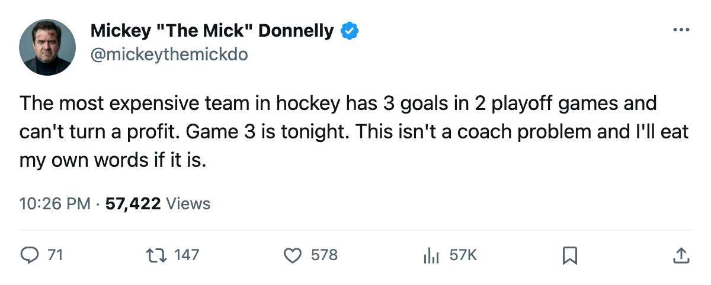
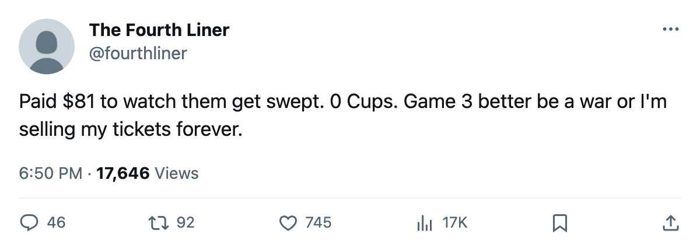

$80.89 MILLION, 3 GOALS IN 2 GAMES, AND NO PROFIT. GAME 3 IS TONIGHT.
Detroit is the most expensive roster in hockey, has the worst cost per point of any club still breathing, and trails Dallas two games to none heading into Game 3 at home.
 Mickey "The Mick" DonnellyColumnist, ex-goalie · The Penalty Box
Mickey "The Mick" DonnellyColumnist, ex-goalie · The Penalty BoxThe piece
Detroit pays the most in hockey. It's losing the first round two games to none and Game 3 is tonight.
The  Detroit Red Wings payroll is $80.89 million, the highest figure on the Bureau's Contract Ledger. The nearest club is
Detroit Red Wings payroll is $80.89 million, the highest figure on the Bureau's Contract Ledger. The nearest club is  New York Rangers at $78.14 million, and the New York Rangers finished 28-35-10 and watched all of this from a couch. Detroit earned a playoff spot, which counts. But at $0.84 million per point, it's the worst ratio of any club still alive. Every single one. I checked.
New York Rangers at $78.14 million, and the New York Rangers finished 28-35-10 and watched all of this from a couch. Detroit earned a playoff spot, which counts. But at $0.84 million per point, it's the worst ratio of any club still alive. Every single one. I checked.
 New Jersey Devils is $45.15 million and costs $0.40 million a point. Banked $44.15 million.
New Jersey Devils is $45.15 million and costs $0.40 million a point. Banked $44.15 million.  Vancouver Canucks is $35.16 million, the cheapest roster in hockey, costs $0.36 million a point, banked $39.13 million.
Vancouver Canucks is $35.16 million, the cheapest roster in hockey, costs $0.36 million a point, banked $39.13 million.  Toronto Maple Leafs is $60.04 million and won 133 points and $29.51 million in profit. Detroit charges $81 a seat, gets 15,651 through the gate, brings in $82.99 million, and the profit column reads "n/a."
Toronto Maple Leafs is $60.04 million and won 133 points and $29.51 million in profit. Detroit charges $81 a seat, gets 15,651 through the gate, brings in $82.99 million, and the profit column reads "n/a."
| Detroit Red Wings |  Dallas Stars Dallas Stars | New Jersey Devils | |
|---|---|---|---|
| Payroll | $80.89M | $67.99M | $45.15M |
| Revenue | $82.99M | $86.99M | $96.93M |
| Profit | n/a | $12.33M | $44.15M |
| Cost per point | $0.84M | $0.62M | $0.40M |
| Ticket | $81 | $80 | $80 |
| Attendance | 15,651 | 16,067 | 17,261 |
Dallas is the club trying to end Detroit's season. It spent $67.99 million, cost $0.62 million per point, and made $12.33 million. Won Game 1, 4-1, on 2005-04-09. Won Game 2, 3-2 in overtime, on 2005-04-11. Three goals in two playoff games from the most expensive roster in the league.
The regular season said this was coming. Dallas went 3-2-0 with 1 overtime win in 6 games against Detroit. 24-19 in goals. Dallas scored 5 more than Detroit in a 6-game series. Dallas had Detroit's number all October, all November, all the way through March. Now Dallas is 2-0 in the playoffs and can close the door tonight at Detroit's own building.
Detroit's one top-30 scorer on the Bureau's list is  Brett Hull77, 40 years old, 111 points, 22.0 minutes a night. The highest-paid club in hockey built its season around a man who turned 40. There is no mis-slot flag for Detroit. No third-liner rated above a top-six man at his position. No coach skating a 77 overall on the fourth line while a 70 plays center on the second. The problem is not deployment. The problem is what $80.89 million bought, and what it did not.
Brett Hull77, 40 years old, 111 points, 22.0 minutes a night. The highest-paid club in hockey built its season around a man who turned 40. There is no mis-slot flag for Detroit. No third-liner rated above a top-six man at his position. No coach skating a 77 overall on the fourth line while a 70 plays center on the second. The problem is not deployment. The problem is what $80.89 million bought, and what it did not.
Detroit Red Wings has prestige points of 474 and Cups of 0. Last spring: 1 round. This spring: 2 losses and a date with elimination tonight at home. Same round. Same exit. Same payroll eating everything.

